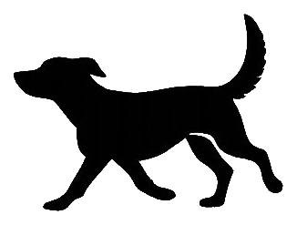
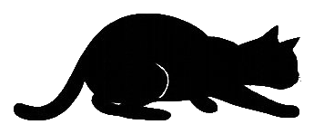
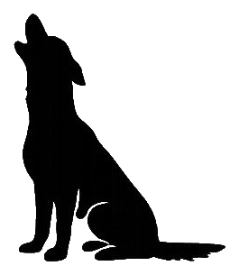
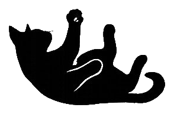

Help reunite Waseca County pets with their families
No lost pets reported right now. We hope it stays that way!
No found pets reported right now.


Fill out the form below and we'll post it to this page and share it on our Facebook.
Tips for a better report:
Time matters. Here's what to do right now.
Thank you for helping. Here's how to get them home.
Contact us at (507) 201-7287. We can help coordinate next steps, connect the animal with a foster home, and get them the care they need.